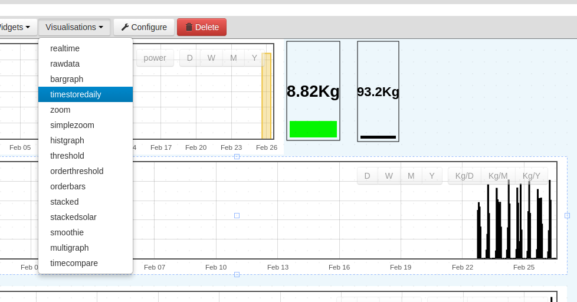
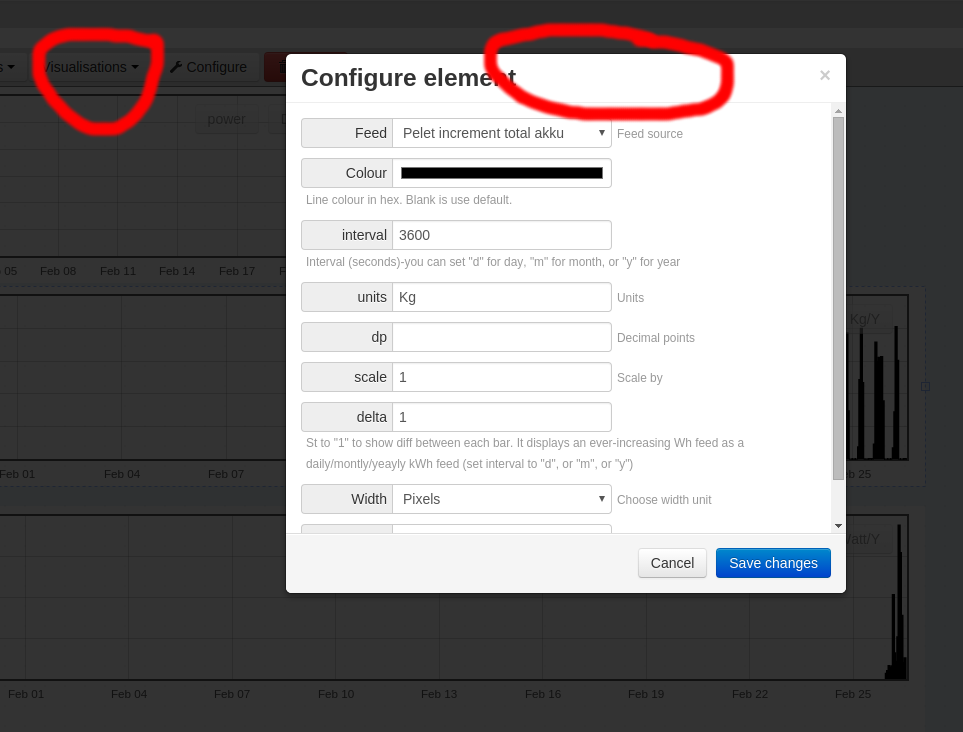
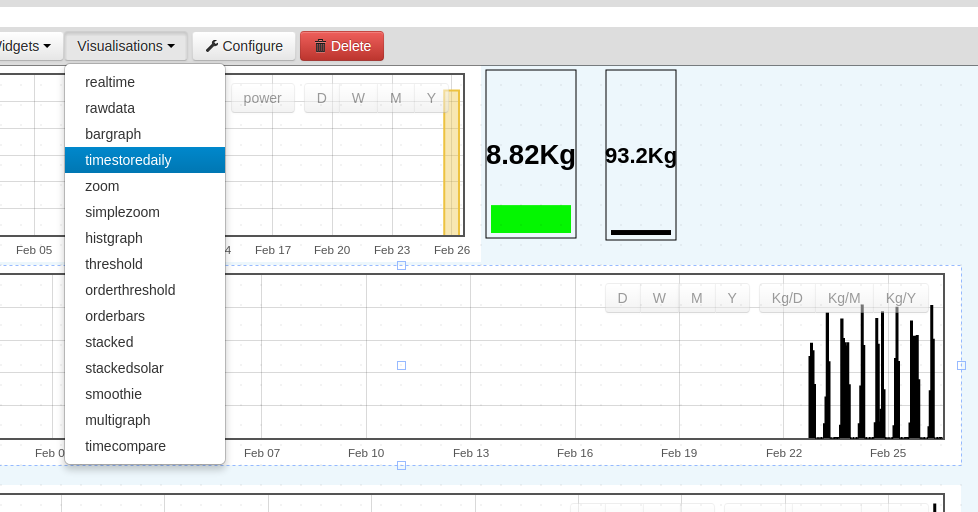
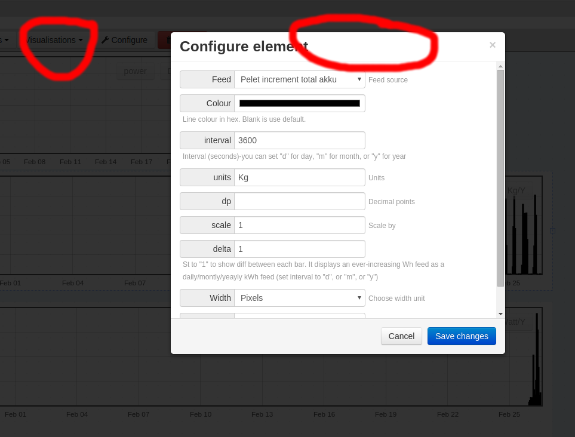

Hi,
i am new to EmonCMS and still trying to understand the whole visualisation thing.
A "nice to have" would be to get the title of the visualisation you are editing in the "configure element" window..
Don't know if this is the right place to post this.
By the way i am using a local Emoncms Version 9.31 | 2016.02.13
pictures to explain what i am pretending....


EmonCMS Configure Visualisation Header Improvement
Submitted by nuno on Fri, 26/02/2016 - 13:53Hi,
i am new to EmonCMS and still trying to understand the whole visualisation thing.
A "nice to have" would be to get the title of the visualisation you are editing in the "configure element" window..
Don't know if this is the right place to post this.
By the way i am using a local Emoncms Version 9.31 | 2016.02.13
pictures to explain what i am pretending....

